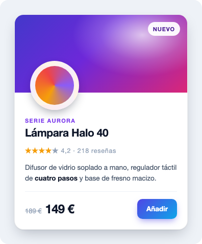
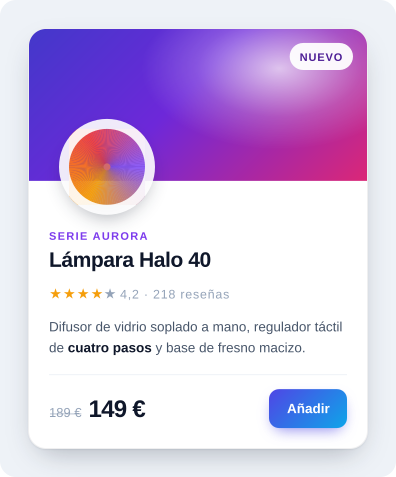
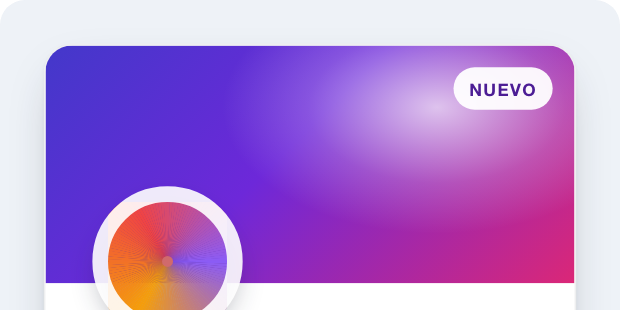
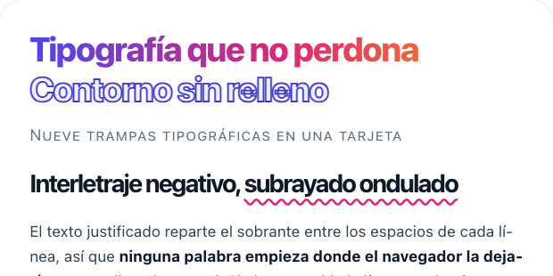
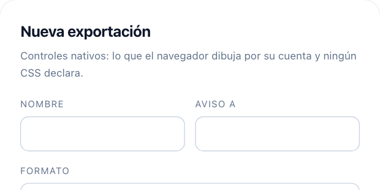
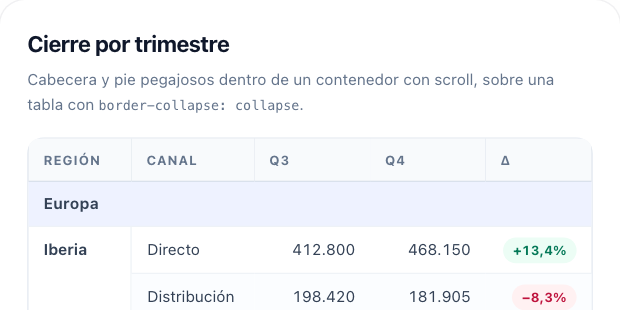
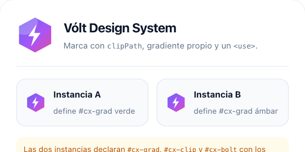
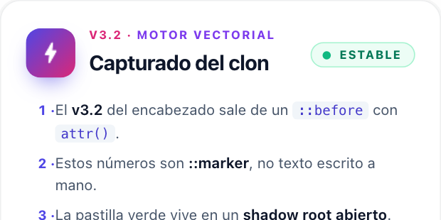

Turn an element into shapes, editable text and usable layers for SVG and Figma. Geometry and text positions are measured from the layout already resolved by the browser.


Zoom in, then drag either panel. The raster loses detail; the vector keeps its geometry and text.
Every file below came directly from the engine. Open one in Illustrator, Inkscape, a browser or a text editor. The text and shapes remain editable, and the file includes a comment listing every approximation.

Product card Linear, radial and conic gradients, elliptic radii, two shadows, a struck-through price.
Hostile typography Justified text, hyphenation, a wavy underline, small caps, superscripts, RTL, emoji.
Form controls Checkbox, radio, range, progress and a select chevron: pixels that no CSS property describes.
Collapsed table A border-collapse grid, resolved the way the browser resolved it and painted as its own layer.
Inline SVG Four icons deep, three of them declaring the same element ids. Nothing collides.
What is not in the DOM A::before with attr(), ::marker numbers, an open shadow root and an icon-font ligature.
Browsers, SVG and Figma do not support the same effects. The plugin tells you when it had to adapt, rasterize or omit something, and identifies the affected layer. You can review those changes before handing the file to a designer or a client.
The clearest case is backdrop-filter: frosted glass is a blur of
whatever sits behind the panel, and SVG has no way to express that, so the panel arrives as a
flat colour. The report names the layer, and the limits list
it.
Grid, flexbox, sticky positioning and container queries are already resolved on screen. The plugin measures that result instead of trying to implement another CSS layout engine.
Register the plugin on a capture and it gains toVector() and
toFigma(), alongside toPng() and toCanvas(). The only
option is exclude.
import { snapdom } from '@zumer/snapdom'
import vector from './vendor/snapdom-vector.mjs'
const shot = await snapdom(document.querySelector('#plan-card'), {
plugins: [vector()]
})
const svg = await shot.toVector() // standalone SVG, no foreignObject, text is text
await shot.toFigma() // on the clipboard: paste it into FigmaBoth come from the same capture of the page, and neither needs a server or an install.
shot.toVector()
Standalone SVG with editable text and native shapes. Open it in Illustrator, Inkscape, Penpot, Figma, a browser, a printer or a plotter.
shot.toFigma()
Copies the capture in Figma's own paste format. Paste it into a Figma file and you get frames, editable text, gradients, shadows and images, with nothing installed. The format is undocumented, so if a Figma release breaks it, the SVG route keeps working while we update.
While it is active you get every release, the private repository and support. When it ends you keep using the versions you have, forever. You just stop receiving new ones. No activation, no seat counting, no phoning home.
Launch offer: 50% off the first year for the first 30 purchases across PDF and Vector, until September 29, 2026, whichever comes first. Up to two purchases per customer. Use code LAUNCH50 at checkout.
$39 50% off
Then $39/year. Renews annually until cancelled.
One person, your own projects.
$99 50% off
Then $99/year. Renews annually until cancelled.
Companies, and work you deliver to clients.
Made by the maintainer of SnapDOM. Support comes from the person who wrote the plugin, at Zumerlab.
Building a platform, design tool or SDK that lets other people generate vector files with it? Write to us. That one needs its own agreement.
No. Nothing is traced and nothing is recognised. Every box, line and baseline is read from the live layout, and every fill is parsed from the CSS that produced it. A tracer cannot tell you the second stop of a gradient; this hands you its colour and position.
No, and any tool that says otherwise is one you will stop trusting on the third capture. Some things have no Figma equivalent at all: a colour-matrix filter, OpenType feature settings, per-range baseline shift. The difference here is that you get the list, per node, before you paste.
No. toFigma() copies the capture and you paste it into Figma. The flat SVG
opens in Illustrator, Inkscape, Penpot and any browser too, which is why this is not a Figma
product with a lock-in problem.
No. The engine runs in your page, and the copy for Figma goes through your own clipboard. For a lot of teams that is a legal requirement.
Chromium today. Everything is measured there and the pixel baselines were recorded there. We have not run it against Firefox or WebKit, so we are not claiming them.
Send us the page. A case that breaks it is worth more to us than the licence, and the samples above are there so you can check the output on pages like yours first.
{kind=link}
{kind=link}
{kind=link}
{kind=link}
{kind=link}
{kind=link}